Shakotan
Shakotan · Hokkaido
Shakotan
Highlighted on the Hokkaido map.
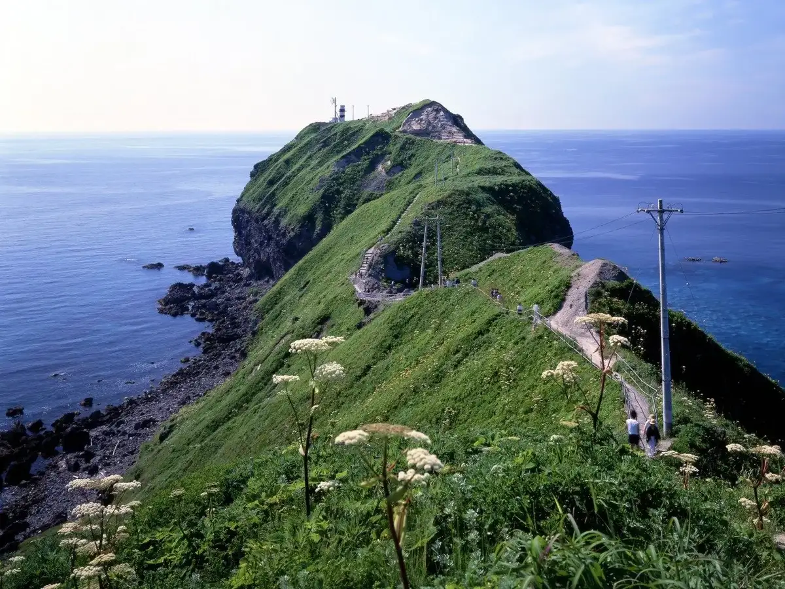
Stay
旅館 美国観光ハウス
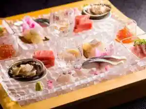
Ryokan Yoshikuni Kankou Hausu
ＡＬＬ ＩＮＮ ＢＩＫＵＮＩ
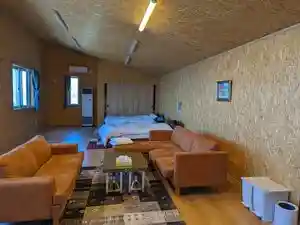
A L L I N N B I K U N I
海鮮の宿 みはらし荘
Kaisen No Yado Miharashi Sou
お宿 鱗晃荘～りんこうそう～
O Yado Uroko Akira Sou ~ Rinkousou ~
岬の湯しゃこたんの宿フロリダ
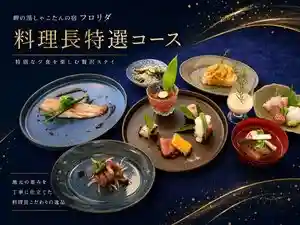
Misaki No Yu Shakotanno Yado Furorida
ＭＥＧＡ積丹ベース
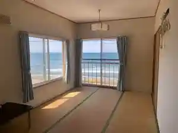
M E G A Shakotan Beesu
ニャー助のホテルん
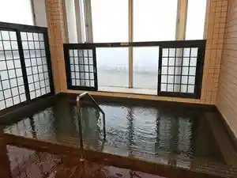
Nyaa Jo No Hoteru N
海鮮味処 御宿 新生
Kaisen Ajidokoro Onjuku Shinsei
Dining
海のや
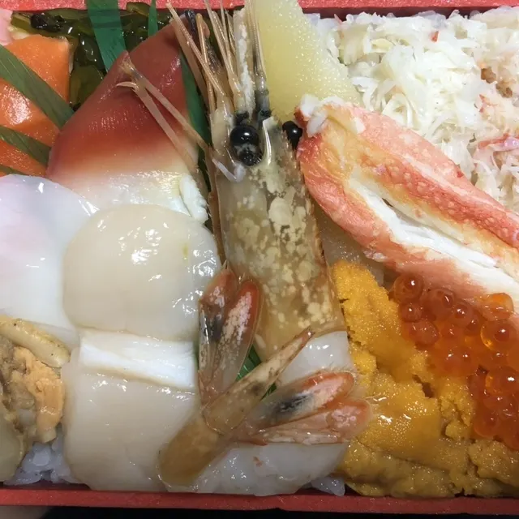
Umi Noya
やまとみ
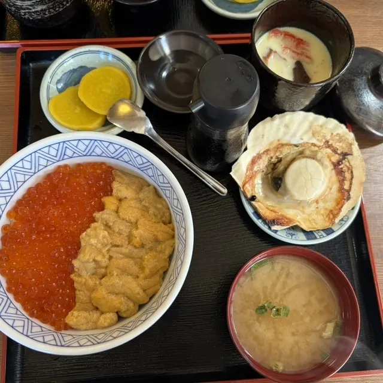
Yamatomi
セイコーマート 美国店
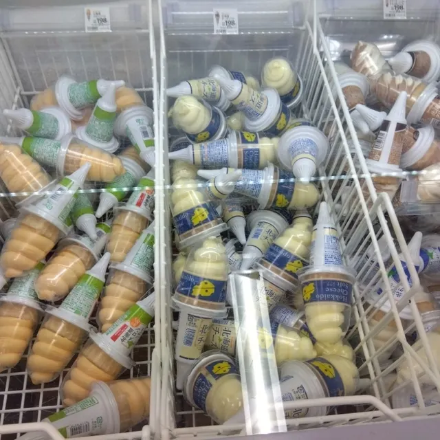
Seikoomaato Yoshikuni Mise
びくに苺園
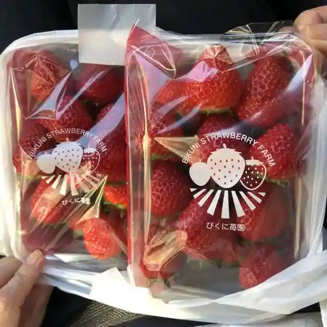
Bikuni Ichigo Sono
積丹番屋TK
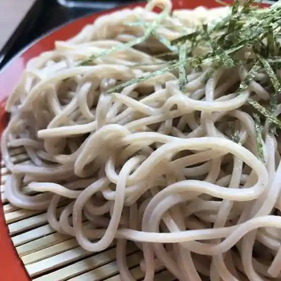
Shakotan Banya Tk
民宿・食事処 大島
Minshuku Shokuji Tokoro Ooshima
鰊伝習館 ヤマシメ番屋
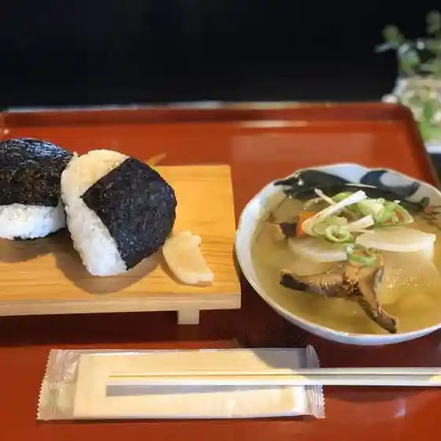
Nishin Denshuu Kan Yamashime Banya
積丹しんせん
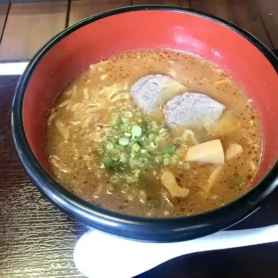
Shakotan Shinsen
鱗晃
Uroko Akira
みさき
Misaki
なぎさ食堂
Nagisa Shokudou
ALL INN BIKUNI
All Inn Bikuni
平八
Heihachi
お食事の店 マミ
O Shokuji No Mise Mami
さわ
Sawa
CAFE STAND 窓
Cafe Stand Mado
海辺の宿 運上屋
Umibe No Yado Unjou Ya
お宿 お食事処 鱗晃荘
O Yado O Shokuji Tokoro Uroko Akira Sou
角田旅館
Kakuda Ryokan
岬の湯 しゃこたん
Misaki No Yu Shakotan
小林民宿
Kobayashi Minshuku
うに膳屋 積丹本店
Uni Zen Ya Shakotan Honten
岬の家ＮＡＮＡ
Misaki No Ie N A N A
食堂うしお
Shokudou Ushio
Sights
Kamoi Cape
Kamoi Cape
Shima Takeshi I Coast
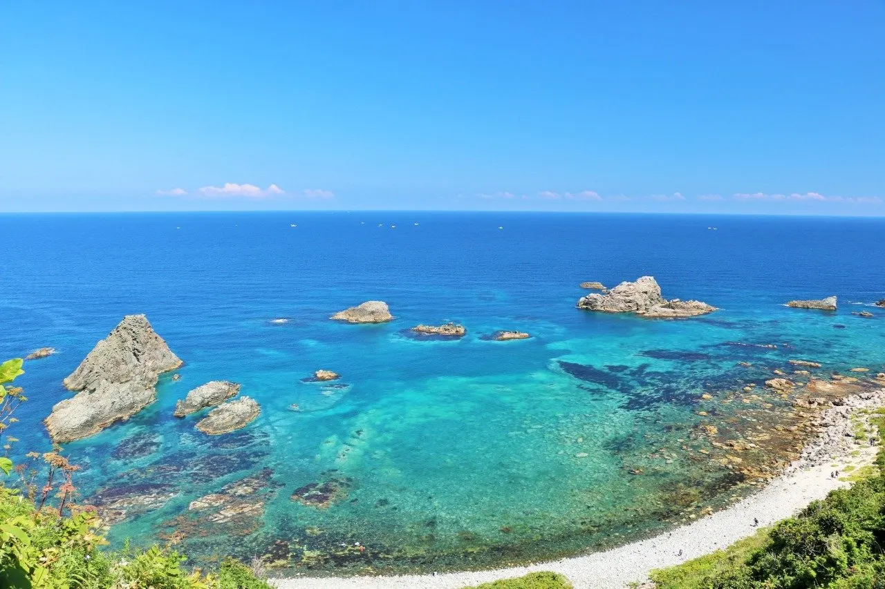
Shima Takeshi I Coast
Shakotan Cape
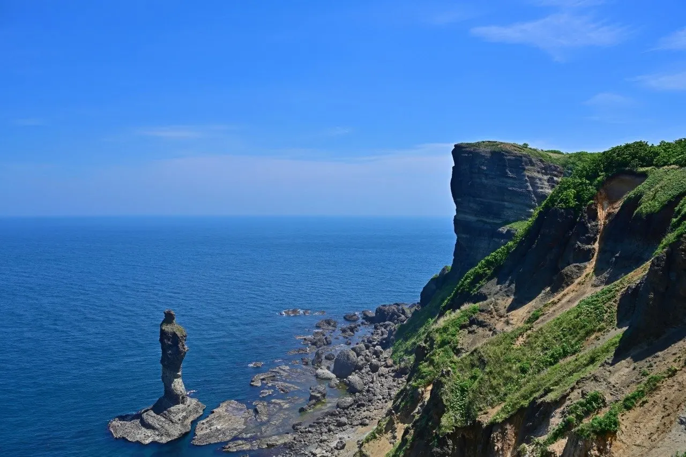
Shakotan Cape
Suichu Tembo Fune Nyu Shakotan Go
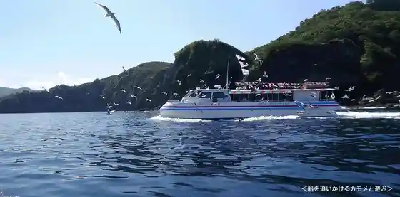
Suichu Tembo Fune Nyu Shakotan Go
Ogon Cape
Ogon Cape
Shakotan Uni
Shakotan Uni
Joro Ko Iwa
Joro Ko Iwa